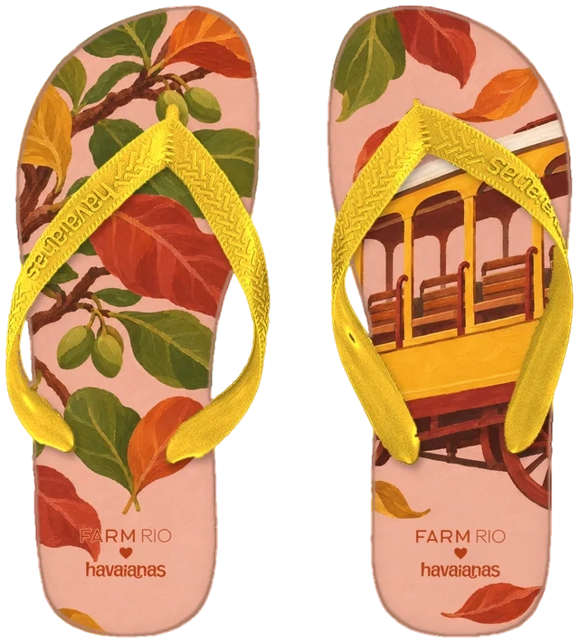
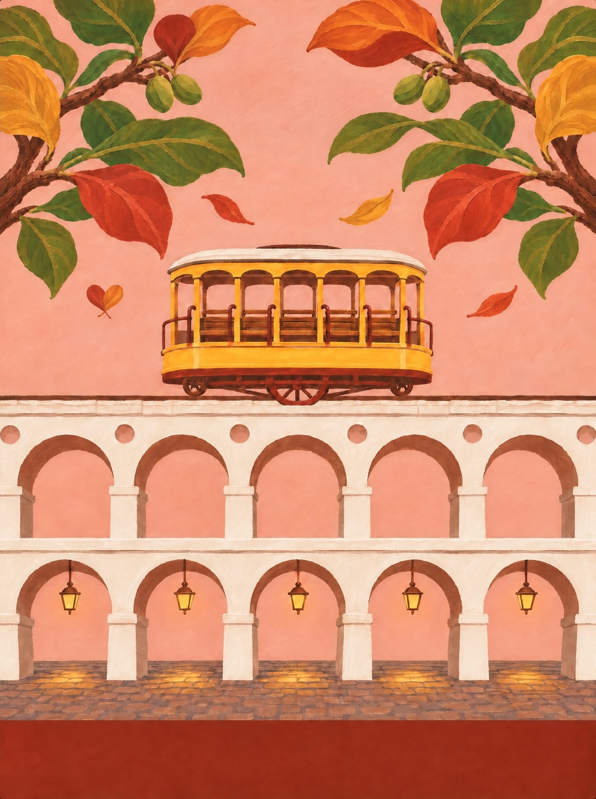
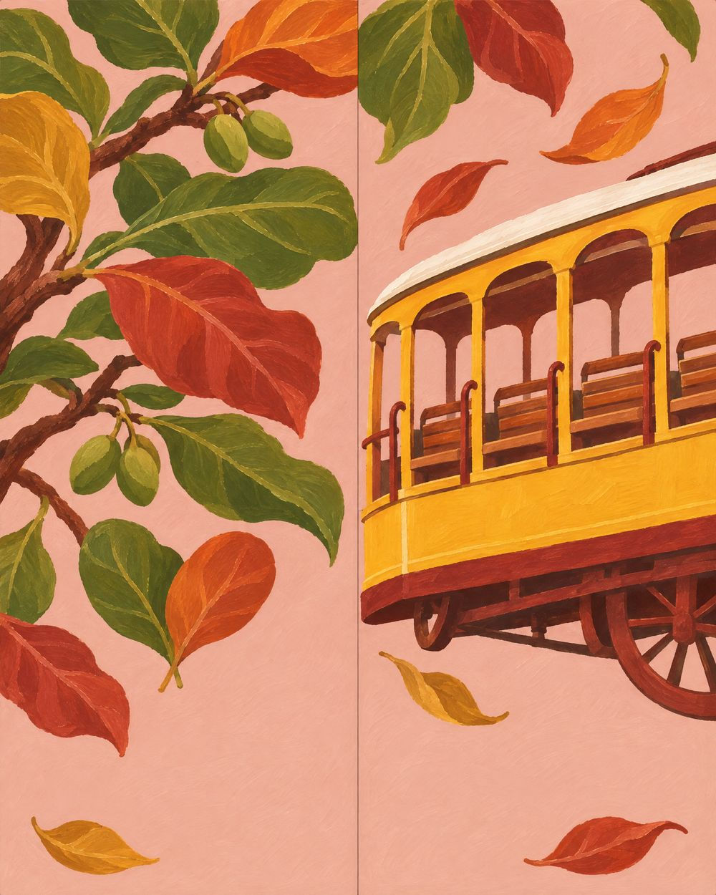
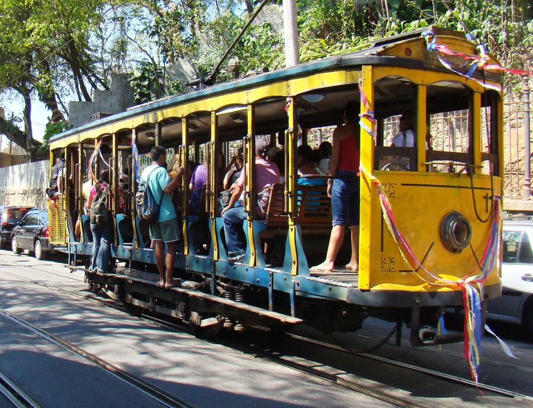
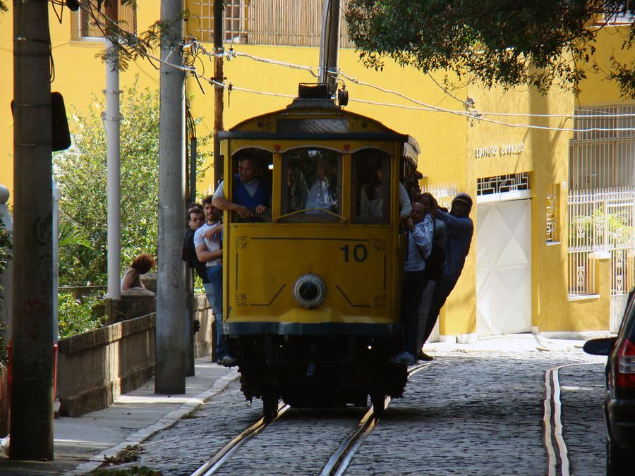

Rio de Janeiro
Bonde de Santa Teresa
O Rio que sobe o morro: o bondinho amarelo atravessando os Arcos da Lapa e as amendoeiras que vestem as ruas da cidade de verde, vermelho e laranja.
02 / 14 · Sudeste

o coração
Encontre o coração
Ele não está desenhado em cima de nada. Aparece quando os próprios elementos da cena se encontram. Procure na ilustração e toque nele.
♥ duas folhas de amendoeira caindo juntas, ao lado do bonde


o par
Dois pés, uma história
na palmilha
pé esquerdo com o galho de amendoeira (folhas verdes virando vermelhas e laranja, amêndoas verdes); pé direito com o bondinho amarelo atravessando na diagonal.
borracha e tira
rosa-empoeirado das casas de Santa Teresa; tira amarelo-bonde.
a arte da palmilha
Em díptico

caderno de campo
A própria FARM diz que o Rio é zero sutil. Mas o Rio que a gente quer mora entre o calçadão e o subúrbio: as ondas pretas e brancas de pedra portuguesa em Copacabana, o mate gelado no galão e o biscoito de polvilho na mão, o guarda-sol listrado fincado na areia, o bonde amarelo subindo Santa Teresa por cima dos Arcos da Lapa. À noite, a roda de samba na Pedra do Sal; de dia, o Mercadão de Madureira, onde tem de tudo, até o que você não sabia que precisava.
trilha · roda de samba na Pedra do Sal · Garota de Ipanema (Tom Jobim e Vinicius de Moraes) · o grito do vendedor na areia: “olha o mate!”
A âncora: o bondinho amarelo de Santa Teresa, que só existe aqui e ainda roda sobre os Arcos da Lapa.
pesquisa de campo
Na rua, antes do desenho




campanha
O par no lugar


o que ficou de fora
O que a gente evitou
- 01
Cristo e Pão de Açúcar como cartão-postal: a FARM já é o Rio; a V2 vai no detalhe do dia a dia.
- 02
Embalagem de marca (biscoito, mate): sem collab, entra só o objeto, sem logo.
- 03
Favela como cenário exótico: o subúrbio entra pela feira e pelo samba, com gente de verdade.
fotos de campo deste estado
 ← Minas Gerais
← Minas Gerais